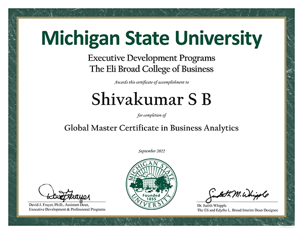
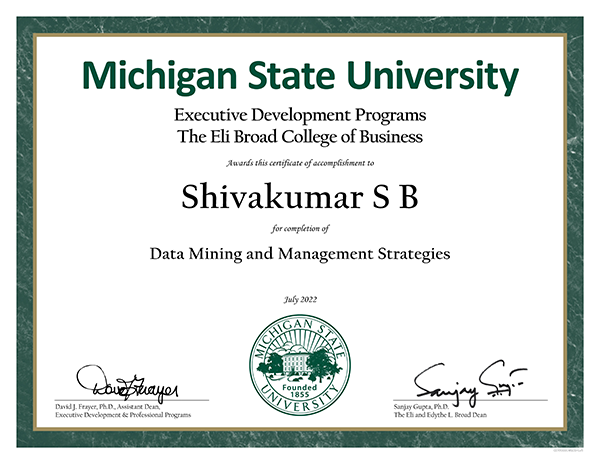
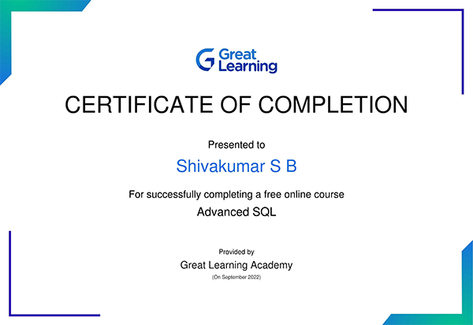
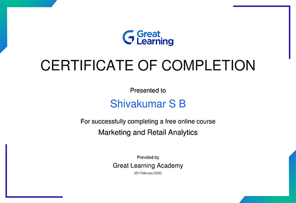
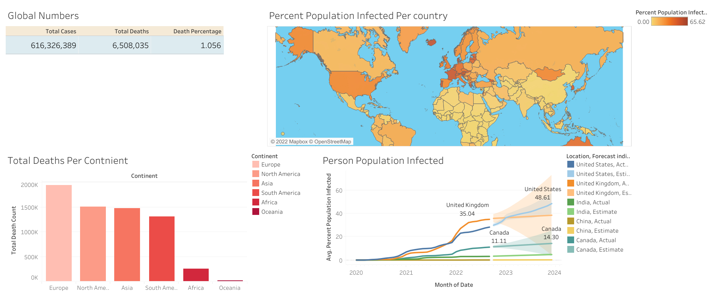
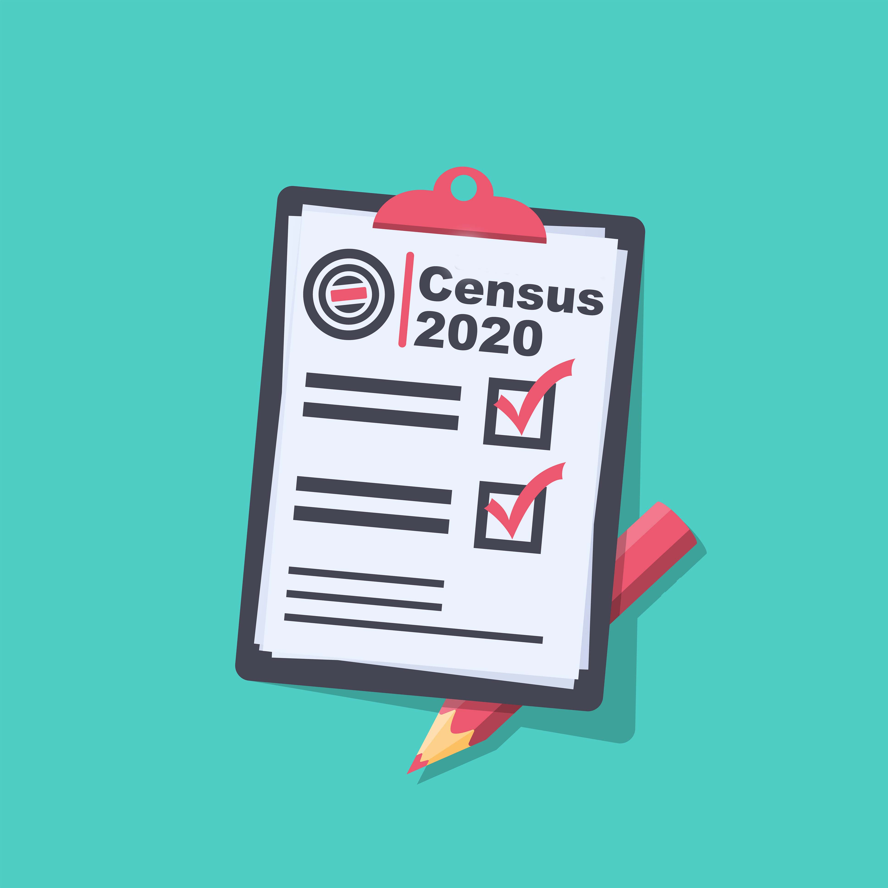

CERTIFICATIONS AND PROJECTS
Global Masters: Business Analytics- Michigan State University
Completed my Global Masters in Business Analytics Course offered by Michigan State University. The course's emphasis was on: 𝐀𝐧𝐚𝐥𝐲𝐭𝐢𝐜𝐬 𝐟𝐨𝐫 𝐂𝐨𝐦𝐩𝐞𝐭𝐢𝐭𝐢𝐯𝐞 𝐀𝐝𝐯𝐚𝐧𝐭𝐚𝐠𝐞, 𝐃𝐚𝐭𝐚 𝐌𝐢𝐧𝐢𝐧𝐠 𝐚𝐧𝐝 𝐌𝐚𝐧𝐚𝐠𝐞𝐦𝐞𝐧𝐭 𝐒𝐭𝐫𝐚𝐭𝐞𝐠𝐢𝐞𝐬, 𝐀𝐩𝐩𝐥𝐲𝐢𝐧𝐠 𝐁𝐮𝐬𝐢𝐧𝐞𝐬𝐬 𝐀𝐧𝐚𝐥𝐲𝐭𝐢𝐜𝐬.

Certified in Business Analytics - IMS Pro School
Gained proficiency in Excel Proficiency, Python, R, Regression, Logistic Regression, Forecasting (Time Series), Data Mining Techniques, SQL, Tableau, and Deep Knowledge of Statistical Techniques.

Certified in Data Mining and Management Strategies- Michigan State University
Completed my Global Masters in Data Mining and management strategies Course offered by Michigan State University The course's emphasis was on: Analytical tools, statistical methods, and algorithms to create data models

Certified in Python
Provided by great learning Academy for successfully completing an online course on Python fundamentals for beginners.
Certified in MySQL
Provided by a great learning Academy for successfully completing an online course on SQL Basics.
Certified in Advance SQL
Provided by a great learning Academy for completing an online course on Advanced SQL.

Certified in Data Visualization Tool
Provided by Edu Pinnacle for certifying in data visualization tool Tableau.

PROJECTS
- DATA CLEANING USING SQL FOR HOUSING DATA
I utilised SQL to clean the housing dataset in this project. Using SQL queries, this database is used to clean data from the provided dataset in order to standardise date format, populate property addresses, and break off addresses into separate columns. 
- VIEW PROJECT
- DATA EXPLORATION USING SQL FOR COVID DATA
I have created a dashboard with a database which provides information on the covid data. This database was made to provide the mortality rate, the population impacted by COVID, the countries with the greatest infection rates, the continents with the highest overall death rates and highest per-population death rates, the vaccination rates, and the populations that have received at least one COVID vaccine globally. 
- VIEW PROJECT
- DATA VISUALIZATION USING TABLEAU FOR COVID DATA
This particular Tableau Visualization project is made out of covid data. A dashboard has been created to visualize the stats of Global numbers, the Total number of deaths per continent, and the percentage of the population infected per country and predicted the rate of the population infected using time series graphical representation. This database will present the counts in a more simplified manner, making it more user-friendly. - 
- VIEW PROJECT
- MOVIE CORRELATION PROJECT USING PYTHON
Is the movie business in decline? Are OTT platforms the next rulers of entertainment? These initial inquiries prompted me to compile a dataset on movie revenue and examine it throughout the years. Identified missing data, data that was cleaned by deleting null values, Discovered the data kinds and transformed them into the necessary formats. Refined the available data source to remove inaccurate data. sorted the highest-grossing films throughout decades, taking into account variables that have a high likelihood of linkage. Unstacked the data, identified the top 15 businesses based on gross revenue, and sorted the pairs. For a few comparisons during the analysis, a graph was plotted. Using Python and its libraries, plotted graphs such as scatter, linear, and correlation matrices. 
- VIEW PROJECT
- DATA ANALYSIS WITH PYTHON ON WEATHER DATASET
Python analysis using weather data, Identified the dataset's form, index, datatype, unique values, null and non-null values. Learned the number of times the weather is exactly clear, the mean visibility, the standard deviation, the variation in relative humidity, the mean value of each column against value, the minimum and maximum value, and the unique values for "Wind Speed." - VIEW PROJECT
- DATA ANALYSIS USING PYTHON ON INDIA CENSUS 2011 DATASET
Python analysis using the Indian census in 2011. Determined the form, index, datatype, unique values, null and non-null values for the dataset. Information about the districts an overall population count. A number of people who practise diverse religions as a whole. data grouped according to state. discovered the gender pay gap in the workforce. - 
- VIEW PROJECT